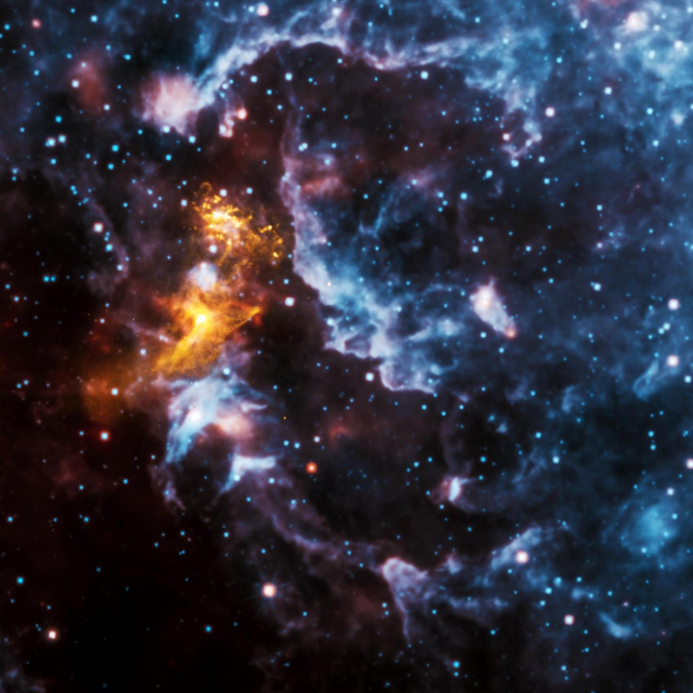
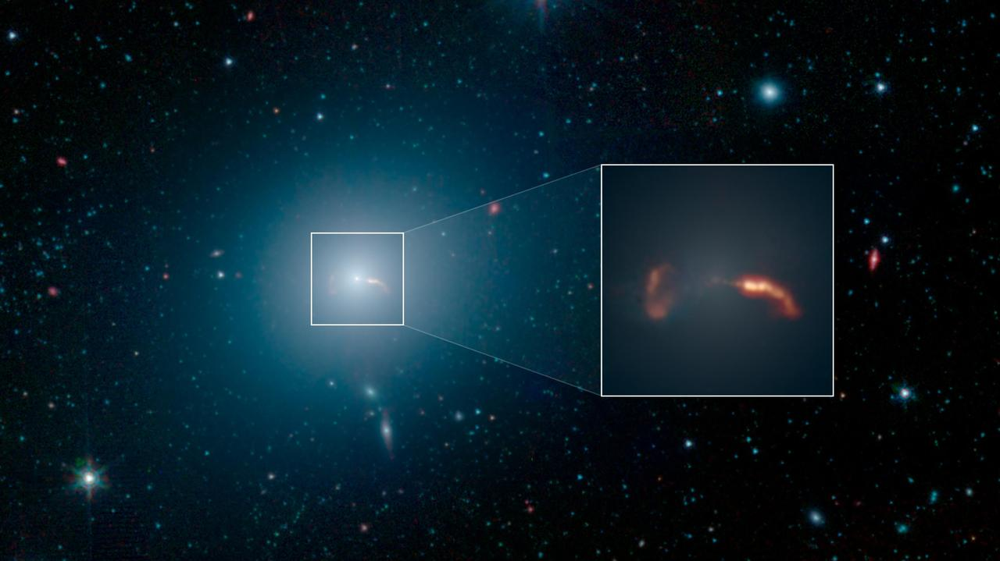
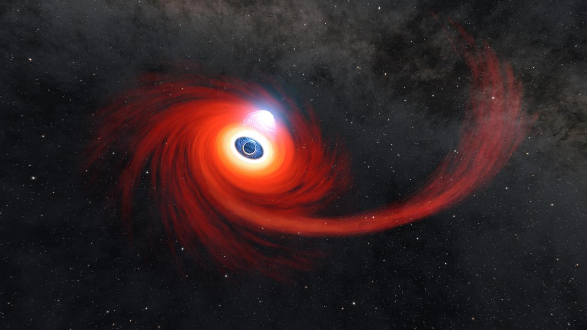
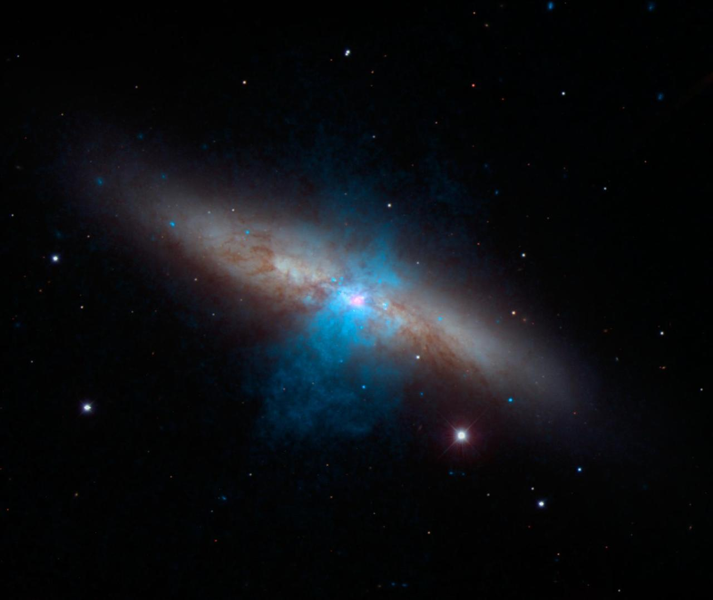
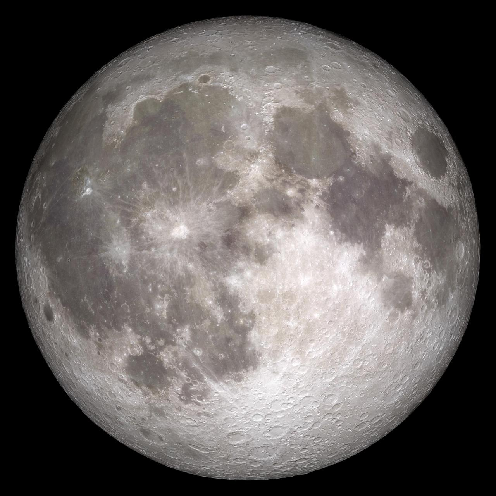
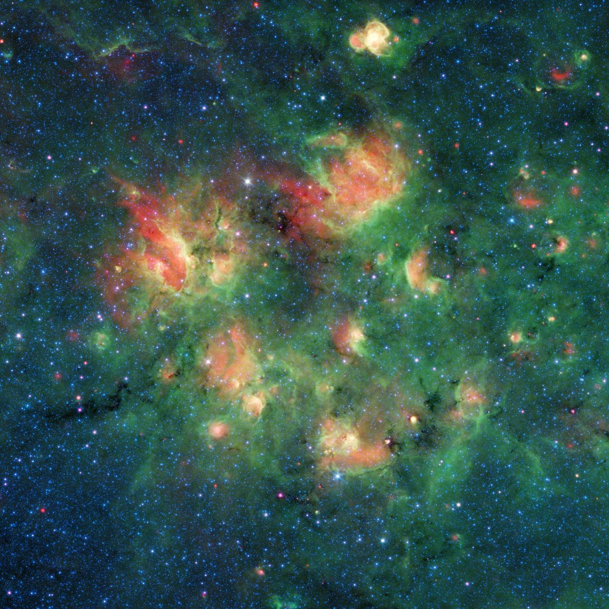

Что такое чёрная дыра?
Чёрная дыра — это область пространства-времени, гравитация в которой настолько чудовищно сильна, что ничто — ни частицы, ни электромагнитное излучение, включая свет — не может покинуть её, пересекув границу, известную как горизонт событий.
Общая теория относительности предсказывает, что достаточно компактная масса способна деформировать пространство-время, образуя чёрную дыру. Несмотря на колоссальное влияние на судьбу любого объекта, пересекающего горизонт, по ОТО он не обладает никакими локально наблюдаемыми особенностями.
Источник: NASA Science; Общая теория относительности — А. Эйнштейн, 1915
Анатомия чёрной дыры
Сингулярность
Центр чёрной дыры, где материя сжата до бесконечной плотности, а законы физики перестают работать. Одномерная точка с огромной массой в бесконечно малом пространстве.
Горизонт событий
Граница, за которой ничто не может вырваться. Не физическая поверхность, а математический рубеж, где вторая космическая скорость равна скорости света — 299 792 км/с.
Фотонная сфера
Область на расстоянии 1,5 радиуса Шварцшильда, где фотоны движутся по орбитам. Любой фотон, вошедший по касательной, будет вращаться вокруг чёрной дыры.
Аккреционный диск
Диск из газа и пыли, вращающийся по спирали. Трение нагревает материал до миллионов градусов, заставляя его ярко светиться в рентгене и видимом спектре.
Релятивистские джеты
Пучки ионизированной материи, выбрасываемые от полюсов со скоростью, близкой к скорости света. Простираются на тысячи световых лет.
Эргосфера
Область за горизонтом вращающейся чёрной дыры, где само пространство-время увлекается. Объекты не могут оставаться неподвижными — вращаются вместе с ЧД.
Типы чёрных дыр
Звёздной массы
Образуются при коллапсе массивных звёзд (более 25 M☉). Ядро обрушивается в результате сверхновой. Самый распространённый тип.
Промежуточной массы
Существование подтверждено недавно. Могут формироваться при слиянии чёрных дыр или прямом коллапсе газовых облаков.
Сверхмассивные
В центре почти каждой крупной галактики. Механизм роста — один из главных вопросов астрофизики.
Первичные
Гипотетические, могли образоваться при экстремальных условиях в первую секунду после Большого взрыва.
Как рождаются чёрные дыры
Массивная звезда
Звезда с массой от 25 M☉ сжигает водород в ядре, синтезируя всё более тяжёлые элементы — вплоть до железа.
Коллапс ядра
Железное ядро превышает предел Чандрасекара (~1,4 M☉). Давление вырожденного газа не выдерживает. Ядро рушится за миллисекунды.
Взрыв сверхновой
Ударная волна разрывает внешние слои звезды — взрыв на мгновение затмевает целую галактику.
Рождение чёрной дыры
Если ядро превышает ~3 M☉, никакая сила не остановит коллапс. Формируется горизонт событий — чёрная дыра рождена.

Крабовидная туманность — остаток сверхновой 1054 года. NASA/ESA Hubble.
Знаменитые чёрные дыры

M87* Первая сфотографированная
10 апреля 2019 — первый прямой снимок тени ЧД. Восемь радиотелескопов по всему миру работали как один виртуальный телескоп размером с Землю.
EHT Collaboration, ApJ Letters, 2019

Стрелец A* Сердце Галактики
Нобелевская премия 2020 за доказательство. EHT получил снимок в 2022 году, подтвердив предсказания ОТО.
EHT Collaboration, 2022; Нобелевский комитет

Лебедь X-1 Первая подтверждённая
Обнаружен в 1964 как рентгеновский источник. Предмет знаменитого пари Хокинга и Торна — Хокинг проиграл в 1990.
NASA, Webster & Murdin 1972

TON 618 Одна из самых массивных
Горизонт событий простирался бы далеко за орбиту Плутона. Именно эту ЧД мы моделируем на этой странице.
Shemmer et al. 2004, ApJ

Gaia BH1 Ближайшая известная
«Спящая» ЧД — не поглощает материю. Обнаружена по колебаниям звезды-компаньона солнечного типа.
El-Badry et al. 2023, MNRAS
История открытия
«Тёмные звёзды» Мичелла
Джон Мичелл предположил существование тела, настолько массивного, что даже свет не может его покинуть.
ОТО Эйнштейна
Альберт Эйнштейн публикует уравнения поля — гравитация как искривление пространства-времени.
Решение Шварцшильда
Карл Шварцшильд находит первое точное решение уравнений Эйнштейна — предсказывает горизонт событий.
Вращающаяся ЧД Керра
Рой Керр находит решение для вращающейся ЧД — более реалистичное. Раскрывает эргосферу и увлечение систем отсчёта.
Излучение Хокинга
Стивен Хокинг предсказывает: ЧД не абсолютно чёрные — квантовые эффекты заставляют их медленно испаряться.
Гравитационные волны (LIGO)
Впервые зарегистрирована рябь пространства-времени от слияния двух ЧД. Нобелевская премия 2017.
Первый снимок ЧД
EHT получает первое изображение тени M87* — кольцо раскалённого газа вокруг монстра в 6,5 млрд M☉.
Стрелец A* — снимок
EHT публикует снимок ЧД в центре нашего Млечного Пути, подтвердив десятилетия косвенных доказательств.
Физика чёрных дыр
Гравитационное линзирование
Гравитация искривляет свет, создавая искажённые и множественные изображения. Вблизи ЧД формируется фотонное кольцо.
Замедление времени
Вблизи ЧД время замедляется. На горизонте — фактически останавливается для далёкого наблюдателя. GPS-спутники учитывают этот эффект.
Излучение Хокинга
Квантовые флуктуации у горизонта создают пары частиц. Одна падает внутрь, другая ускользает. ЧД звёздной массы испарялась бы ~10⁶⁷ лет.
Спагеттификация
Приливные силы растягивают объекты вдоль гравитационного градиента. У сверхмассивных ЧД приливные силы у горизонта удивительно слабы.
Информационный парадокс
Если ЧД испарится, что произойдёт с информацией? Квантовая механика говорит — нельзя уничтожить, ОТО — исчезает за горизонтом. Нерешённая проблема физики.
Гравитационные волны
Слияние двух ЧД создаёт рябь пространства-времени. За 0,2 секунды — больше энергии, чем все звёзды наблюдаемой Вселенной.
В числах
Звук чёрной дыры
В 2003 году обсерватория «Чандра» обнаружила звуковые волны в раскалённом газе вокруг ЧД в скоплении Персея. Нота си-бемоль на 57 октав ниже средней до — в квадриллион раз ниже порога слуха.
В 2022 NASA опубликовало «сонификацию», сдвинув частоты в слышимый диапазон. Результат — зловещий гулкий дрон. Нажмите кнопку звука в правом верхнем углу.
NASA Chandra X-ray Observatory, Fabian et al. 2003
Интерстеллар (2014)
Фильм Кристофера Нолана содержал самое научно точное изображение ЧД в кино. Физик Кип Торн совместно с Double Negative разработал рендерер DNGR, решающий уравнения ОТО для миллионов лучей.
Вымышленная ЧД «Гаргантюа» раскрыла неожиданный эффект: аккреционный диск обволакивает ЧД сверху и снизу через линзирование. Свет с задней стороны огибает объект, создавая характерный нимб.
Наша симуляция использует аналогичную трассировку лучей в метрике Керра (спин a ≈ 0,97) для воспроизведения линзирования, доплеровского излучения и увлечения систем отсчёта.
James et al. «Gravitational Lensing by Spinning Black Holes…», CQG, 2015